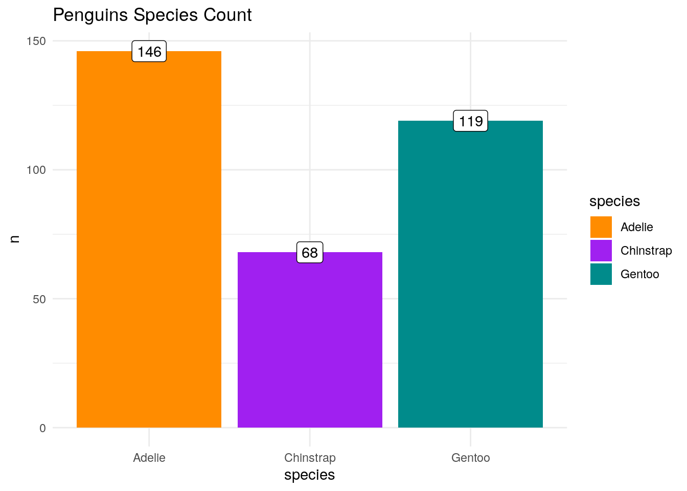
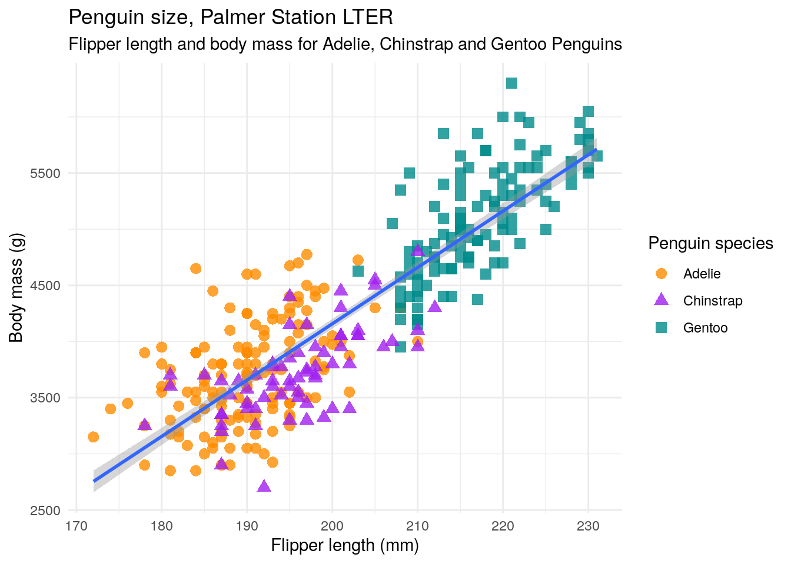

library("here")here() starts at /home/rstudio/workspace/dsic_simple_projectsource(here("code","packages.R"))
source(here("code","functions.R"))This is the presentation of the partial results of the study so far. It is a Quarto document.
Let’s start by loading the code.
library("here")here() starts at /home/rstudio/workspace/dsic_simple_projectsource(here("code","packages.R"))
source(here("code","functions.R"))Start your targets.
tar_visnetwork(targets_only = TRUE)here() starts at /home/rstudio/workspace/dsic_simple_projecttar_make()here() starts at /home/rstudio/workspace/dsic_simple_project
✔ skip target penguins_df
✔ skip target fpenguins_df
✔ skip target correlation_mx
✔ skip target species_bar_plot
✔ skip target model_bm_fl
✔ skip target species_size_cp
✔ skip target model_bm_fl_df
✔ skip pipeline [0.196 seconds]Show me a glimpse of the Palmer Penguins dataframe.
penguins_df <- tar_read(penguins_df)
# if you want take a look at the data
# glimpse(penguins_df)
# remove all the cases with NAs
f_penguins_df <- tar_read(fpenguins_df)
glimpse(f_penguins_df)Rows: 333
Columns: 8
$ species <fct> Adelie, Adelie, Adelie, Adelie, Adelie, Adelie, Adel…
$ island <fct> Torgersen, Torgersen, Torgersen, Torgersen, Torgerse…
$ bill_length_mm <dbl> 39.1, 39.5, 40.3, 36.7, 39.3, 38.9, 39.2, 41.1, 38.6…
$ bill_depth_mm <dbl> 18.7, 17.4, 18.0, 19.3, 20.6, 17.8, 19.6, 17.6, 21.2…
$ flipper_length_mm <int> 181, 186, 195, 193, 190, 181, 195, 182, 191, 198, 18…
$ body_mass_g <int> 3750, 3800, 3250, 3450, 3650, 3625, 4675, 3200, 3800…
$ sex <fct> male, female, female, female, male, female, male, fe…
$ year <int> 2007, 2007, 2007, 2007, 2007, 2007, 2007, 2007, 2007…Show me the species in a plotbar.
tar_read(species_bar_plot)
Make a correlation matrix.
tar_read(correlation_mx) bill_length_mm bill_depth_mm flipper_length_mm body_mass_g
bill_length_mm 1.0000000 -0.2286256 0.6530956 0.58945111
bill_depth_mm -0.2286256 1.0000000 -0.5777917 -0.47201566
flipper_length_mm 0.6530956 -0.5777917 1.0000000 0.87297890
body_mass_g 0.5894511 -0.4720157 0.8729789 1.00000000
year 0.0326569 -0.0481816 0.1510679 0.02186213
year
bill_length_mm 0.03265690
bill_depth_mm -0.04818160
flipper_length_mm 0.15106792
body_mass_g 0.02186213
year 1.00000000Build a scatter plot species vs size and add a linear model line.
tar_read(species_size_cp) + geom_smooth(method = "lm")`geom_smooth()` using formula = 'y ~ x'
As one can, see there’s a positive linear correlation between the body mass and the flipper length.
This sounds interesting, let’s create a linear model to predict body mass from the specimen’s flipper length .
# build the model to predict the body mass from the flipper length
model <- tar_read(model_bm_fl)
model
Call:
lm(formula = body_mass_g ~ flipper_length_mm, data = df)
Coefficients:
(Intercept) flipper_length_mm
-5872.09 50.15 summary(model)
Call:
lm(formula = body_mass_g ~ flipper_length_mm, data = df)
Residuals:
Min 1Q Median 3Q Max
-1057.33 -259.79 -12.24 242.97 1293.89
Coefficients:
Estimate Std. Error t value Pr(>|t|)
(Intercept) -5872.09 310.29 -18.93 <2e-16 ***
flipper_length_mm 50.15 1.54 32.56 <2e-16 ***
---
Signif. codes: 0 '***' 0.001 '**' 0.01 '*' 0.05 '.' 0.1 ' ' 1
Residual standard error: 393.3 on 331 degrees of freedom
Multiple R-squared: 0.7621, Adjusted R-squared: 0.7614
F-statistic: 1060 on 1 and 331 DF, p-value: < 2.2e-16Now let’s create a dataframe with the actual values and the predictions from our model.
# create a df with the real values, the residuals and the prediction
model_df <- tar_read(model_bm_fl_df)
print(as_tibble(model_df))# A tibble: 333 × 4
flipper_length_mm body_mass_g predicted residual
<int> <int> <dbl> <dbl>
1 181 3750 3206. 544.
2 186 3800 3456. 344.
3 195 3250 3908. -658.
4 193 3450 3807. -357.
5 190 3650 3657. -7.03
6 181 3625 3206. 419.
7 195 4675 3908. 767.
8 182 3200 3256. -55.8
9 191 3800 3707. 92.8
10 198 4400 4058. 342.
# … with 323 more rowsThis ends the short analysis and presentation of the Palmer Penguins dataframe.